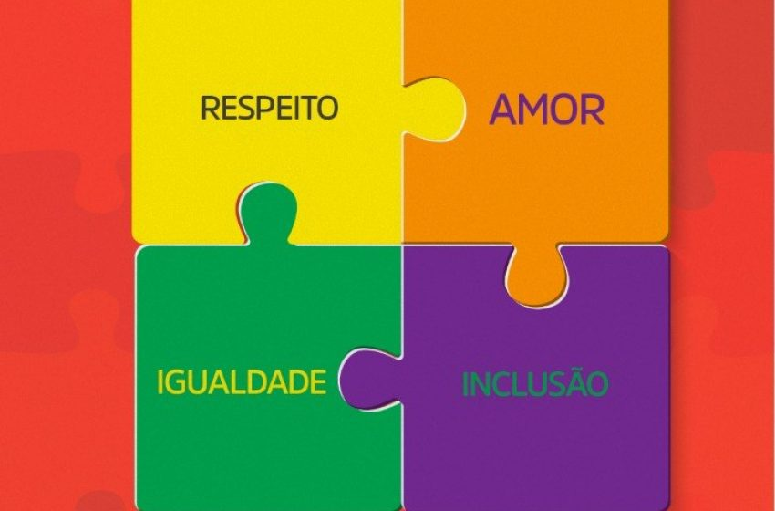

O que é o Dia do Orgulho Autista?

O Dia do Orgulho Autista, celebrado em 18 de junho, é uma data criada para afirmar que o autismo faz parte da neurodiversidade humana. Trata-se de um movimento que valoriza a autoaceitação, a diversidade de pensamento e o combate ao preconceito.
Diferentemente de campanhas voltadas apenas para a conscientização médica, essa data destaca a identidade autista e foi criada por pessoas autistas, com o objetivo de promover respeito, reconhecimento e orgulho.
O símbolo do infinito colorido representa a diversidade das experiências autistas e as múltiplas formas de perceber o mundo. Valorizar as vozes autistas é um passo importante para a construção de uma sociedade mais inclusiva.
Curiosidades
- O Dia do Orgulho Autista é celebrado internacionalmente em 18 de junho.
- Embora muitas campanhas utilizem a cor azul, o orgulho autista é frequentemente representado pelo símbolo do infinito colorido.
- Muitos movimentos autistas preferem o uso do termo “autista” em vez de “pessoa com autismo”, por considerá-lo uma afirmação de identidade.